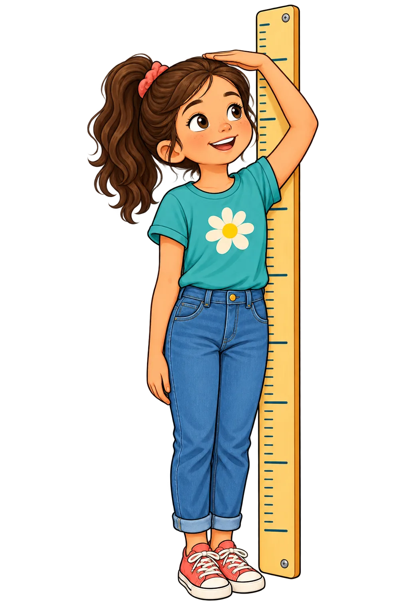
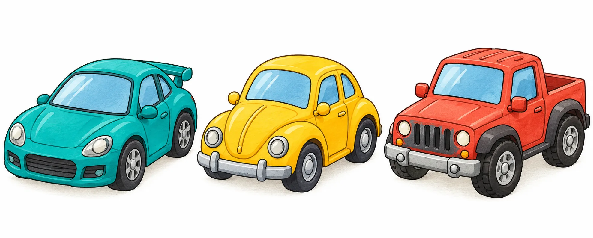

Neue Aufgabe · Zahlen, Daten & Möglichkeiten
Mila und der Zahlen-Drache
Eine Mathe-Mission mit Zahlengeraden, kniffligen Daten und überraschend vielen Möglichkeiten. Dein Stand wird auf diesem Gerät automatisch gespeichert.
1Natürliche ZahlenZahlen ordnen
Lies die Pfeile ab, vergleiche die Zahlen und finde Vorgänger und Nachfolger.
1a · Welche Zahl zeigen die Pfeile?
1b · Setze < oder > ein.
1c · Vorgänger und Nachfolger
2RundenRunden mit Überblick
Merke: Bei 0 bis 4 bleibt die Rundungsstelle gleich. Bei 5 bis 9 wird sie um 1 erhöht. Alle Stellen rechts davon werden zu Nullen. Beispiel: 6 742 auf Hunderter gerundet ist 6 700.
2a · Runde die Zahlen.
2b · Korrigiere die Ergebnisse. Schreibe jeweils das richtige gerundete Ergebnis.
2c · Welche Zahlen werden auf Hunderter zu 3 400?
2d · Runde auf ganze Euro.
2e · Schätze sinnvoll.
Im Museum wurden die Tageszahlen auf Tausender gerundet: Donnerstag 7 000, Freitag 13 000, Samstag 33 000 und Sonntag 48 000 Besuche. Wie klein kann die tatsächliche Gesamtzahl sein? Wie groß höchstens? (Ab 500 wird aufgerundet.)
3Daten vergleichenRanglisten & Spannweiten
3a · Bildschirmzeit
Zwölf Kinder notieren ihre Bildschirmzeit in Stunden: 5; 12; 7; 18; 11; 4; 16; 9; 12; 20; 6; 14.
3b · Körpergrößen
Gemessene Größen: 132; 145; 138; 149; 141; 155; 138; 147; 151; 143; 136; 150 cm.

Merke: Spannweite = größter Wert minus kleinster Wert. Schreibe bei Ranglisten jeden Wert mit, auch wenn er mehrfach vorkommt.
4HäufigkeitstabelleWie lange ist der Schulweg?
24 Kinder brauchen so viele Minuten bis zur Schule: 5; 7; 12; 8; 10; 6; 15; 22; 18; 4; 13; 9; 11; 16; 20; 14; 25; 17; 32; 19; 6; 12; 27; 8.
Kreuze ja oder nein an.
Streifendiagramm
Ein Kästchen steht für ein Kind. Die Farben zeigen die Zeitgruppen.
5Säulen- & StreifendiagrammDaten sichtbar machen
5a · Pias Nachrichten pro Monat
Pia zählt ein halbes Jahr lang ihre Nachrichten: Januar 35, Februar 55, März 40, April 75, Mai 30, Juni 65.
5b · Klassensprecherwahl
32 Kinder stimmen ab: Mina 8, Ali 10, Bea 6 und Leo 4 Stimmen. Die übrigen Stimmen stehen für andere Kandidierende.
6StreifendiagrammDie bunte Autosammlung

Tobias sortiert seine Modellautos nach Farben. In der Tabelle steht, wie viele Autos es pro Farbe gibt.
7Daten in DiagrammenUmfragen darstellen
7a · Lieblingstiere in vier Klassen
Ergänze die Summen jeder Tierart und die Klassensummen.
Erstelle das Balkendiagramm: ein Kästchen = 1 Stimme.
7b · Noten einer Klassenarbeit
Note 1: 3 Kinder, Note 2: 5, Note 3: 9, Note 4: 4, Note 5: 2, Note 6: 1.
8KreisdiagrammAnteile im Kreis
120 Kinder besuchen ein Schulzentrum. Im Kreisdiagramm steht die Hälfte für den Ort, 30 % für das Nordviertel und 20 % für das Südviertel.
Schreibe die passenden Kinderzahlen auf und beantworte die Fragen.
9Diagramme lesenWas zeigen die Balken?
9a · Geburtsgewichte
Die Balken zeigen, wie viele Babys mit verschiedenen Gewichten geboren wurden.
9b · Schuhgrößen
Das Säulendiagramm zeigt die Anzahl der Kinder pro Schuhgröße.
10BaumdiagrammeWie viele Möglichkeiten?
10a · Stell dir ein Mittagessen zusammen.
Es gibt zwei Vorspeisen (Suppe oder Salat), zwei Hauptgerichte (Pasta oder Gemüse-Lasagne) und zwei Nachspeisen (Apfel oder Birne).
10b · Drei Farben, drei Felder
Du malst drei Quadrate hintereinander. Du hast Türkis, Gelb und Koralle.
10c · Zwei Plätze im Angriff
Fünf Spielerinnen und Spieler stehen zur Auswahl. Zwei davon werden für rechts und links ausgewählt.
11KombinationenCodes und Ziffern
11a · Ein Schatz-Tresor hat vier Schlösser.
11b · Jede Ziffer darf genau einmal vorkommen. Richtig oder falsch?
Denkanstoß: Bei vier verschiedenen Ziffern gibt es 4 Möglichkeiten für die erste Stelle, dann 3 für die zweite, 2 für die dritte und 1 für die letzte. Beginnt die Zahl mit 0, ist sie nicht vierstellig.